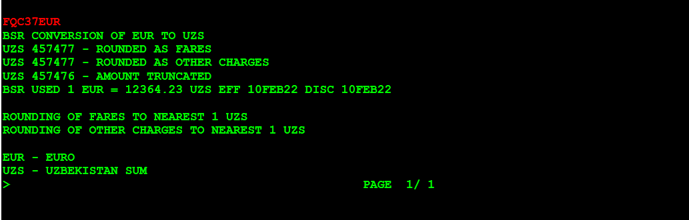
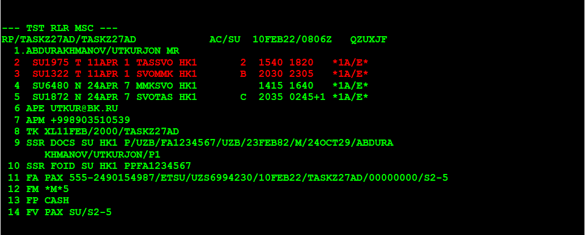

Без доплаты по тарифу и таксам, со штрафом оплаченным на EMD без оформления нового билета - (RV) РЕВАЛИДАЦИЯ.
1-й ШАГ. Открываем бронирование (PNR)
RT номер брони (PNR)
2-й ШАГ. Открываем запись электронного билета (по номеру строки FA)
TWD/L11
3-й ШАГ. Проверяем статус электронного билета.
Должен быть «О»

4-й ШАГ. Проверяем оплаченные таксы.
TWD/TAX

5-й ШАГ. Вызываем правила тарифа билета принятого к обмену.
FQD «откуда» «куда» /A «авиакомпания» /D «дата вылета» / R, «дата продажи» / C «класс»
FQDTASMMK/ASU/D11APR*24APR/R,10FEB22/CT

FQDTASMMK/ASU/D11APR*24APR/R,10FEB22/CN

6-й ШАГ. Читаем правила тарифа билета принятого к обмену. Так как в данном авиабилете участвуют два тарифа, нам нужно проверить условия обоих тарифа и так как авиабилет полностью не использован применить штраф тарифа у которого сумма штрафа больше.
FQN05//PE

FQN05//PE

Как видно, по правилам обоих тарифов авиакомпания разрешает производить обмен как частично использованного, так и полностью неиспользованного билета со штрафом 37 евро.
Если сумма штрафов была бы разными, тогда по польностью не использованным билетам применили бы штраф сумму которая выше. По частично использованному авиабилету приминяеться штраф по участку на которую делаеться обмен.
Если нет добора по тарифу и таксам, тогда делаем Ревалидацию авиабилета.
7-й ШАГ. Если штраф в ЕВРО. Делаем пересчет в Сумы.
FQC37EUR/UZS
Получается штраф = 457477 сум.
8-й ШАГ. Возвращаемся в бронирование.
RT
9-й ШАГ. Меняем даты вылета. Для примера на перелете туда (строка 2 и 3).
SB04APR2,3

10-й ШАГ. Сохраняем изменения.
RFUTKUR; ER
11-й ШАГ. Открываем PNR.
RT
12-й ШАГ. Открываем запись электронного билета (по номеру строки FA)
TWD/L11
13-й ШАГ. ОФОРМЛЯЕМ РЕВАЛИДАЦИЮ
Как видно из примера, перебронирование сегментов в PNR (2-3) на новую дату 04APR никак не повлияло на запись электронного билета. Дата перелета в купонах электронного билета (1-2) по-прежнему 11APR.
Наша задача при ревалидации:
синхронизировать запись билета с новыми изменениями в бронировании, т.е. произвести ревалидацию. Для этого вводим команду ревалидации, учитывая что:

RF UTKUR
TTP/ETRV/L11/S2-3/ E1-2/RT
14-й ШАГ. Оформляем квитанцию EMD на штраф за обмен (37 EUR/ 457477 UZS).
RT
Выполнен обмен билета, в правилах тарифа предусмотрен штраф 37 EUR за обмен:
Создадим сегмент SVC:
IU SU HK1 PENF
Используя сегмент SVC создадим маску TSM-P: где: SU-код авиакомпании, 4-номер сегмента SVC
TMC/VSU/L4
15-й ШАГ. Заполнение маски TSM-P (M1-номер маски TSM-P):
указать в маске Y-индикатор международного перелета:
TMI/M1/YI
указать в маске F-Штраф/сбор за обмен в евро, E-эквивалент штрафа в сумах,
K1-курс валюты:
TMI/M1/F EUR37/E UZS457477/K1 12364.23
указать в маске CV - стоимость купона в сумах
(в нашем примере стоимость равна штрафу/сбору за обмен):
TMI/M1/CV-457477
указать в маске A - название города, где выполняется обмен:
TMI/M1/A TASHKENT
указать в маске D - название авиакомпании:
TMI/M1/D AEROFLOT
Посмотреть номер нового билета (оформленного в обмен на старый):
RTTN
указать в маске IC-TKT-номер нового билета и Е –купон электронного билета указать в маске TSM-P
TMI/M1/IC-TKT5552490154987E1-2
указать в маске FP-форма оплаты штрафа:
TMI/M1/FP-CASH
16-й ШАГ. Печатаем квитанцию.
RFUTKUR
TTM
17-й ШАГ. Проверка обмена/Просмотр отчета об оплате и оформлении обмена
TJQ